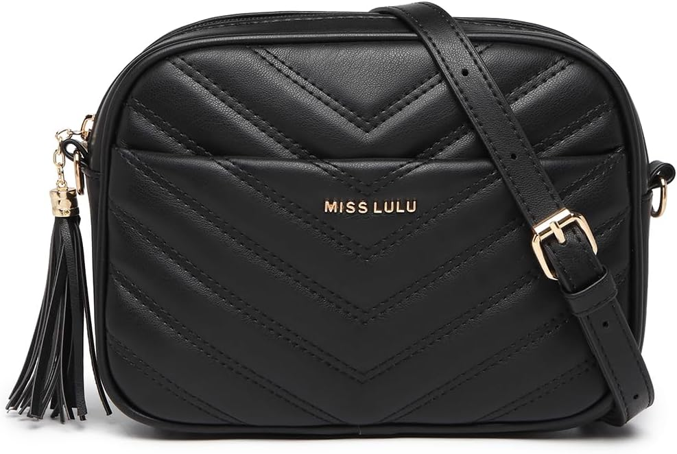

Miss Lulu Bolso bandolera mujer: el bolso del día 268
Un día cualquiera, hasta que decides que no lo es. El bolso de hoy es el Miss Lulu Bolso bandolera mujer. No es un capricho de escaparate: es el que acompaña la versión más práctica de ti, con 4,7★ de nota media y 1,017 valoraciones que respaldan la decisión.

Un bolso no cambia tu día. Cambia la manera de entrar en él: con lo que necesitas, sin lo que sobra y con la certeza de que otras 1,017 personas ya hicieron la misma elección antes que tú. Lo que más repiten sus compradoras: estética.
El repositorio de bolsos aún está creciendo hacia los 365: el día 268 comparte bolso con el día 2, pero cada paso por el calendario le da un enfoque nuevo. Cuando el repositorio se complete, cada día tendrá su propio bolso definitivo.